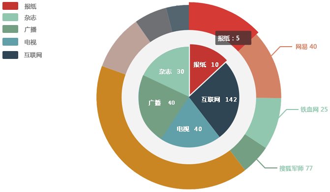

返回顶部
研究范围：
本报告基于CNRS 2015.1-2015.12的数据，选取 一、二线城市 的样本进行研究，推及人口共 xxx.x 万。
受众定义：
学历：高中 以上
年龄：18-25岁
消费：过去12个月购买过膨化食品
媒体投放金额(万元)

| 媒体类型 | 媒体名称 | 投放起始日期 | 投放结束日期 | 投放次数 | 单位投放价格（元） | 投放策略 | 投放总价(万元) |
|---|---|---|---|---|---|---|---|
| 电视 | 央视二套 | 2016.6.1 | 2016.6.30 | 20 | 5,650.00 | 平铺 | 18 |
| 电视 | 央视二套 | 2016.6.1 | 2016.6.30 | 20 | 5,650.00 | 平铺 | 18 |
| 媒体类型 | 媒体 | 投放起始日期 | 投放结束日期 | 投放次数(千次) | 广告形态 | 投放总价(万元) | 单位投放价格 | 投放总价(万元) |
|---|---|---|---|---|---|---|---|---|
| 互联网 | 爱奇艺 | 2016.6.1 | 2016.6.30 | 20 | CPM | 113，000.00 | 3，000/千次 | 11.3 |
| 互联网 | 爱奇艺 | 2016.6.1 | 2016.6.30 | 20 | CPM | 113，000.00 | 3，000/千次 | 11.3 |
| 媒体类型 | 电视 | 电视 | 广播 | 广播 | 报纸 | 互联网 | 杂志 | OTV | 户外 | 户外 | 当日累计 | |
|---|---|---|---|---|---|---|---|---|---|---|---|---|
| CCTV2 | 吉林都市频道 | 吉林音乐广播 | 吉林交通广播 | 东亚经贸新闻 | 搜狐焦点 | 时尚先生 | 爱奇艺 | 楼宇电梯 | 公交站牌 | |||
| 周二 | 2016.6.1 | 1 | 1 | 1 | 1 | 1 | 1 | 1 | 1 | 1 | 1 | 9 |
| 周二 | 2016.6.1 | 1 | 1 | 1 | 1 | 1 | 1 | 1 | 1 | 1 | 1 | 9 |
| 周二 | 2016.6.1 | 1 | 1 | 1 | 1 | 1 | 1 | 1 | 1 | 1 | 1 | 9 |
| 周二 | 2016.6.1 | 1 | 1 | 1 | 1 | 1 | 1 | 1 | 1 | 1 | 1 | 9 |
| 合计 | 1 | 1 | 1 | 1 | 1 | 1 | 1 | 1 | 1 | 1 | 200 |
按到达率 按推及人口
| 总体日到达率 | 目标日到达率 | 总体周到达率 | 目标人群周到达率 | 总体月到达率 | 目标月到达率 | ||
|---|---|---|---|---|---|---|---|
| 电视 | 中央二套 | 79.7% | 79.7% | 79.7% | 79.7% | 79.7% | 79.7% |
| 电视 | 中央二套 | 79.7% | 79.7% | 79.7% | 79.7% | 79.7% | 79.7% |
| 电视 | 中央二套 | 79.7% | 79.7% | 79.7% | 79.7% | 79.7% | 79.7% |
| 总体日到达率 | 目标日到达率 | 总体周到达率 | 目标人群周到达率 | 总体月到达率 | 目标月到达率 | ||
|---|---|---|---|---|---|---|---|
| 电视 | 中央二套 | 79.7% | 79.7% | 79.7% | 79.7% | 79.7% | 79.7% |
| 电视 | 中央二套 | 79.7% | 79.7% | 79.7% | 79.7% | 79.7% | 79.7% |
| 电视 | 中央二套 | 79.7% | 79.7% | 79.7% | 79.7% | 79.7% | 79.7% |
| *单位为万人 | |||||||
按媒体类型
| 触达人群 | 电视交叉 | 广播交叉 | 报纸交叉 | 杂志交叉 | 互联网交叉 | OTV交叉 | 户外交叉 | ||
|---|---|---|---|---|---|---|---|---|---|
| 电视 | 780.0 | 1 | 1 | 1 | 1 | 1 | 1 | ||
| 占目标人群 | 780.0 | 占电视人群 | 1 | 1 | 1 | 1 | 1 | 1 | |
| 电视 | 780.0 | 1 | 1 | 1 | 1 | 1 | 1 | ||
| 占目标人群 | 780.0 | 占电视人群 | 1 | 1 | 1 | 1 | 1 | 1 | |
| 电视 | 780.0 | 1 | 1 | 1 | 1 | 1 | 1 | ||
| 占目标人群 | 780.0 | 占电视人群 | 1 | 1 | 1 | 1 | 1 | 1 | |
| 电视 | 780.0 | 1 | 1 | 1 | 1 | 1 | 1 | ||
| 占目标人群 | 780.0 | 占电视人群 | 1 | 1 | 1 | 1 | 1 | 1 |
按投放媒体
| 触达人群 | 经济之声 | 长春晚报 | 吉林日报 | Vogue | 网易 | 铁血网 | 爱奇艺 | 搜狐视频 | 楼宇液晶 | 公交车身 | |||
|---|---|---|---|---|---|---|---|---|---|---|---|---|---|
| 电视 | 经济之声 | 741.0 | 741.0 | 741.0 | 741.0 | 741.0 | 741.0 | 741.0 | 741.0 | 741.0 | 741.0 | ||
| 占目标人群 | 741.0 | 占经济之声人群 | 741.0 | 741.0 | 741.0 | 741.0 | 741.0 | 741.0 | 741.0 | 741.0 | 741.0 | ||
| 电视 | 经济之声 | 741.0 | 741.0 | 741.0 | 741.0 | 741.0 | 741.0 | 741.0 | 741.0 | 741.0 | 741.0 | ||
| 占目标人群 | 741.0 | 占经济之声人群 | 741.0 | 741.0 | 741.0 | 741.0 | 741.0 | 741.0 | 741.0 | 741.0 | 741.0 | ||
| 电视 | 经济之声 | 741.0 | 741.0 | 741.0 | 741.0 | 741.0 | 741.0 | 741.0 | 741.0 | 741.0 | 741.0 | ||
| 占目标人群 | 741.0 | 占经济之声人群 | 741.0 | 741.0 | 741.0 | 741.0 | 741.0 | 741.0 | 741.0 | 741.0 | 741.0 | ||
| 电视 | 经济之声 | 741.0 | 741.0 | 741.0 | 741.0 | 741.0 | 741.0 | 741.0 | 741.0 | 741.0 | 741.0 | ||
| 占目标人群 | 741.0 | 占经济之声人群 | 741.0 | 741.0 | 741.0 | 741.0 | 741.0 | 741.0 | 741.0 | 741.0 | 741.0 |

返回顶部